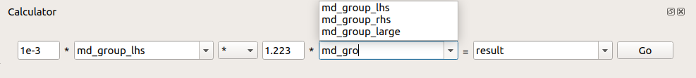

Workspace Calculator¶
The workspace calculator allows to quickly perform binary operations on selected workspace pairs along with simultaneous scaling by arbitrary floating point numbers, provided they are different from zero.
Supported workspaces¶
The operations can be performed on SingleValuedWorkspace, Matrix Workspace, Event Workspace, MD Histogram Workspace, and Workspace Group.
The LHS and RHS, as well as the output workspace name can be selected using WorkspaceSelector.
Operation options¶
The options are to perform the four basic arithmetic operations, namely addition (+), subtraction (-), multiplication (*), and division (/), as well as weighted mean of the inputs (WM). It is not possible to perform the latter over a mixed input consisting of Workspace Group and non-group workspace types.
The output of the operation, if successful, is placed in the ADS with the chosen name, specified through the final WorkspaceSelector. Should no name be provided, a default one, output, is used instead.